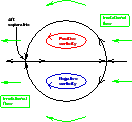

Applied Mathematics
Vorticity Dynamics & Modeling

 |
Applied Mathematics Vorticity Dynamics & Modeling |
|
Undergraduates interested in applied mathematics may apply for a summer
research opportunity at the University of Delaware's Department of Mathematical
Sciences. The projects focus on many areas including fluid dynamics, analysis,
partial differential equations, and scientific computation. Applicants
need not have any exposure to all of these topics, but students should
have an interest and aptitude in mathematics and the physical sciences.
Background.
Fluid dynamics is the study of the motion of gases and liquids. The
mathematical descriptions of fluid flows can be very complex, but often
simplified models can capture the essential aspects of the flow field and
make the flow accessible to mathematical analysis. The curl of the velocity
field, called the vorticity field, provides fertile ground for the study
of geophysical and aerodynamic flows. The vorticity field represents the
same information as the velocity and pressure fields, but at the same time
offers unique mathematical advantages.
Project descriptions.
Many projects are possible depending upon the applicants interests and background.
This project seeks to develop a model of viscous vortex dipole evolution with discrete elements. Similar approaches to singular elements for inviscid monopoles have proven very successful, and the hope is to extend for more physically realistic situations. There is a fair amount of experimental and numerical data on viscous vortex dipoles, and we can always generate more if we need more. The goal is to develop a consistent model and exploit it efficiently.
This project has connections with the next one.
Background: Some exposure to partial differential equations. Knowledge mathematical software with numerical capabilities like Maple, Matlab or Mathematica is a plus.
A vortex couple is a compact region of positive next to a corresponding negative region of vorticity. Together, the two regions move together through the flow, transporting momentum through the domain. While there are some numerical investigations of viscous dipoles, there is no mathematical construction for such an object. Using a few assumptions and different series expansions, it may be possible to construct a practical, analytic description of a vortex couple.
This project has connections with the previous one.
Background: Students should have some background with symbolic packages like Maple or Mathematica, and some exposure to real analysis and/or Fourier series. Some exposure to partial differential equations is a plus but not necessary.
Many geophysical flows can be characterized as shallow 2D layers where the flow does not change appreciably in the vertical direction. We will seek to develop a simple computational scheme for simulating these flows by reducing the governing partial differential equations to a system of ordinary differential equations coupled to the free surface.
Background: Students should have some exposure to numerical analysis, and knowledge of a scientific, programming language. Some exposure to matlab is a plus.
A continuous field can approximated by a linear combination of localized basis functions or blobs. Thus, the function is the sum of many compact blobs. However, under some circumstances, this representation is not efficient, and the same field or a close approximation to it, can be generated using fewer blobs. The goal of this project is to examine different methods of reducing extraneous blobs in a given representation while still preserving all or most of its vital properties.
Background: Knowledge of real analysis and knowledge of a programming
language.
The essentials of the summer opportunity are as follows:
| Where | The University of Delaware. |
| When | June 10 - August 9 (9 weeks) preferred but negotiable. |
| Eligibility | US citizens or permanent residents only, undergraduates only.* |
| Stipend | $3500.** |
* Graduating seniors are not eligible for this problem.
** Students will be expected to arrange for their own transportation,
room and board. However, the Summer Research Program can
assist with finding housing.
Applications.
Students may apply via email (rossi@math.udel.edu) or US mail.
Prof. Louis F. RossiApplication forms are available online as plain text at
Department of Mathematical Sciences
University of Delaware
Newark, DE 19716
http://www.math.udel.edu/~rossi/summer_research2002and must be received by April 26, 2002. Applicants will be notified soon thereafter.
Click here to download a PDF copy of this announcement.
Click here to go to Prof.
Rossi's home page.